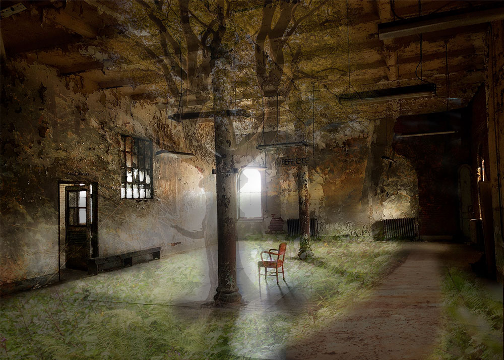
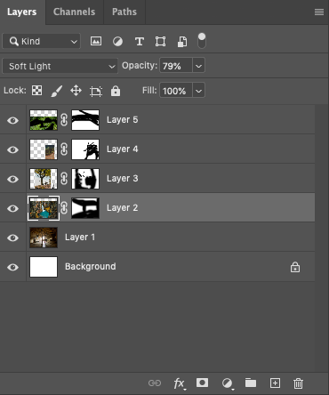

For both of the Photomontages I got the photos from Pexels.com, a free stock photo and video website. I used about 5 images one being of an abandoned room and the rest containing some element of nature. I had added trees and shrubs to the walls. I also added a tree to overlap the pole in the middle of the room. I wanted to make it look like this abandoned room that conatined a another world. I used mask layers on the photos to make it so only some of the overlapping images would show and soften the edges. I used soft light in the blending mode to create a more dreamlike look or story book look.
